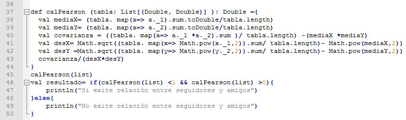

Correlacion Pearson

¿Qué es el coeficiente de correlación de Pearson?
El Coeficiente de Correlación de Pearson es una medida de la correspondencia o relación lineal entre dos variables cuantitativas aleatorias. En palabras más simples se puede definir como un índice utilizado para medir el grado de relación que tienen dos variables, ambas cuantitativas. Teniendo dos variables, la correlación facilita que se hagan estimaciones del valor de una de ellas, con conocimiento del valor de la otra variable. Este coeficiente es una medida que indica la situación relativa de los sucesos respecto a las dos variables, es decir, representa la expresión numérica que indica el grado de correspondencia o relación que existe entre las 2 variables. Estos números varían entre límites de +1 y -1.
¿Cómo calcular correlación de Pearson?
Se define como la relación entre la covarianza y el producto de su desviación estándar
Coef.Correlacion de Pearson: R = Oxy/OxOy
¿Cómo ese interpreta el coeficiente de correlación de Pearson?
El valor del índice de correlación varía en el intervalo [-1,1], indicando el signo el sentido de la relación:
• Si r = 1, existe una correlación positiva perfecta. El índice indica una dependencia total entre las dos variables denominada relación directa: cuando una de ellas aumenta, la otra también lo hace en proporción constante.
• Si 0 < r < 1, existe una correlación positiva.
• Si r = 0, no existe relación lineal. Pero esto no necesariamente implica que las variables son independientes: pueden existir todavía relaciones no lineales entre las dos variables.
• Si -1 < r < 0, existe una correlación negativa.
• Si r = -1, existe una correlación negativa perfecta. El índice indica una dependencia total entre las dos variables llamada relación inversa: cuando una de ellas aumenta, la otra disminuye en proporción constante.
Algoritmo
Algoritmo el cual una vez llamado nos devuelve si es o no una relación de pearson.